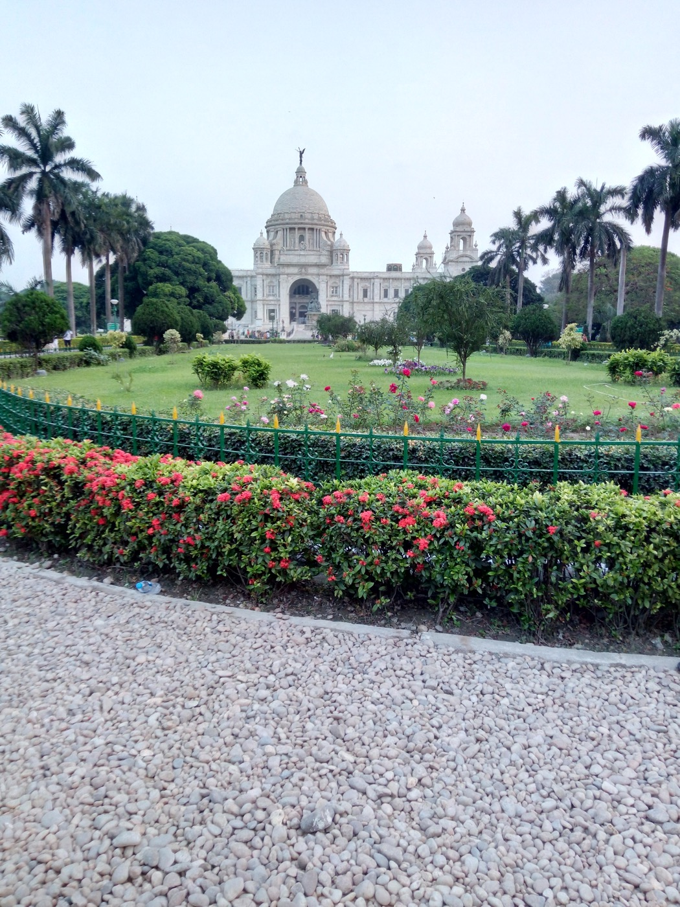

From Sacred Antiquity to Imperial Horizons
ROYAL ARCHITECTURE
OF INDIA
A monumental journey through Hindu rock-cut sanctuaries, Persian-infused Sultanates, the symmetry of the Mughal golden age, and British Indo-Saracenic grandeur.
Beyond Rigid Angles: The Fluid Soul of Indian Architecture
Inspired by both ancient Vedic organic mandalas and the fluid biomorphic philosophy of MAD Architects, Indian royal structures seamlessly merge living geology with geometric grace.

Kailasa Ellora
Sacred Hindu Rock-Cut
Chiseled top-down from living mountain rock without a single joint or brick, mimicking sacred Himalayan peaks.

The Taj Mahal
Imperial Mughal Symphony
Organic marble curves, Persian pishtaq arches, and floral pietra dura gemstone mosaics harmonizing with sunlight.

Victoria Memorial
Colonial Indo-Saracenic
The grand marriage of British neoclassical domes and Italian colonnades with Mughal chhatris and Rajasthani jalis.
The Four Great Architectural Traditions
Hindu & Monolithic
Governed by Vastu Shastra and Shilpa Shastra. Characterized by colossal rock-cut monolithic caves (Ellora), towering Dravidian vimanas (Brihadisvara), and fractal Nagara shikharas (Khajuraho).
Examples: Kailasa Cave, Hampi, Brihadisvara
Core Principle: Cosmic Mountain Axis & Interlocking Granite
Persian & Indo-Islamic
Introduced true arcuated engineering to the subcontinent: pointed true arches, squinches, calligraphy bands, and whispering domes like Gol Gumbaz and Qutub Minar.
Examples: Qutub Minar, Gol Gumbaz, Charminar
Core Principle: Intersecting Arches & Calligraphic Geometry
Mughal Grandeur
The zenith of bilateral symmetry, quadripartite Charbagh paradise gardens, double-shell white marble domes, red sandstone citadels, and exquisite Pietra Dura stone inlay.
Examples: Taj Mahal, Fatehpur Sikri, Red Fort
Core Principle: Charbagh Paradise & Bilateral Symmetry
British Indo-Saracenic
An imperial synthesis marrying Victorian Gothic Revival and Neoclassicism with Indian elements: Rajasthani jharokhas, Rajput chhatris, and Buddhist stupa dome profiles.
Examples: Victoria Memorial, CST Mumbai, Rashtrapati Bhavan
Core Principle: Western Structural Core with Indigenous Envelopes
Explore the 5,000-Year Architectural Timeline
Trace the complete chronological evolution across five millennia—from 756 CE Kailasa rock-cut monoliths and 1010 CE Chola granite cupolas to Qutub Minar, the Taj Mahal, and 1929 CE Rashtrapati Bhavan.
Experience the Royal Projects
Filter masterpieces on-the-fly by Mughal, Hindu, Persian, and British categories. Hover to reveal architectural eras and click any card to inspect full historical blueprints and engineering highlights in an interactive popup.